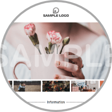

2023

AdobeXD トレース
Adobe XD入門【WEBページのトレース(模写)】で使用したサンプルWEBページです。三角を組み合わせたヘッダーが特徴で、いくつかの実装方法があります。コーディングレベルによって学習内容を変えることができます。※canvaのテンプレートを原案にして、WEBデザインに仕上げました。

Swiper デモ
スライダー(カルーセル)の無料プラグインである【Swiper】のデモで使用したサンプルWEBページです。Swiperには多くのオプションがあるため、さまざまな表現で実装できます。

4つの基本原則
デザインの「4つの基本原則」の説明で使用したサンプルWEBページです。ヘッダー画像(ヒーローイメージ)は、Photoshopで「デュオトーン」加工したものです。「デュオトーン」を使うとプロっぽいデザインに仕上がるのでおススメです。
CSS Grid Layout
CSS Grid Layout（グリッドレイアウト）を使用したWEBページです。こちらは現在、非公開中のものです。レスポンシブ対応のため、PC、TABLET、SMARTPHONEなど、画面サイズによってレイアウトがフレキシブルに変更されま。Flexboxよりも柔軟なスタイルを実現できるのが特徴です。